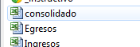

Panel Control de las Actividades o Eventos
A través de este sencillo Panel, iremos a todas y cada una de las hojas o archivos con que llevaremos el control administrativo de la actividad
• • •

Lo primero que debemos hacer es entrar en la carpeta de Dropbox de nuestro Grupo, Distrito o Región (allí donde mismo Trabajamos con el TURCO) y luego hacer doble clic sobre la carpeta Sistema Administrativo.
Esta se abrirá y nos permitirá ver todos los archivos del mismo. Allí debemos hacer doble clic sobre el archivo consolidado.xls
Importante: Es necesario que tengamos instalado MS Excel en nuestra computadora, para que todos los archivos del Sistema funcionen adecuadamente.
Finalmente aparecerá una ventana advirtiendo que el archivo o libro,
está vinculado a otros archivos, lo cual es necesario para que funcione
el sistema.
En este caso debemos pulsar sobre el botón Actualizar, tal como lo muestra la imagen.

El Panel de Control
En la parte inferior de nuestras hojas de Excel, debemos buscar las pestañas
que hacen referencia a las actividades, y seleccionar la Unidad que
nos compete, o la opción Actividades Grupo, si vamos a trabajar con una actividad
que abarque 2 o más unidades o que sean propias de los Adultos
Scouts (capacitación, indabas, reuniones y consejos, etc).
Hecho esto
aparecerá el siguiente menú de control específico para cada actividad... Primero
que nada, en la casilla Nombre del Evento, debe colocar como se llamará la
actividad, si la actividad aún no tiene un nombre definido, no se preocupe,
coloque cualquier nombre que le sirva para identificar el evento, ya que tiene
hasta el día de presentar el informe, para colocar el nombre definitivo.
Con cada uno de los botones en línea horizontal,
podemos acceder a los distintos archivos del Sistema, que aplican para
esta actividad en particular (Presupuesto, informe o resumen, ingresos,
egresos y donativos en especies.)
Nota: Es muy recomendable actualizar los vínculos antes de trabajar en cada archivo (ver siguiente punto).
Actualizar Vínculos del Sistema
Es recomendable que antes de abrir cualquier archivo de trabajo, se pulse el Botón Actualizar , el cual abrirá la hoja vinculos.xls*. Tome en cuenta lo siguiente:
1 Actualizar el archivo
2 Guardar la información
3 Cerrar el archivo para seguir trabajando
En la parte superior derecha de la ventana
Importante:
Este archivo contiene una gran cantidad de vínculos cruzados que
permiten funcionar al Sistema, no debe ser modificado, renombrado ni
borrado.

Ayudas
Para
acceder a este Instructivo, pulse sobre el
botón ? que está en la parte superior derecha del panel.